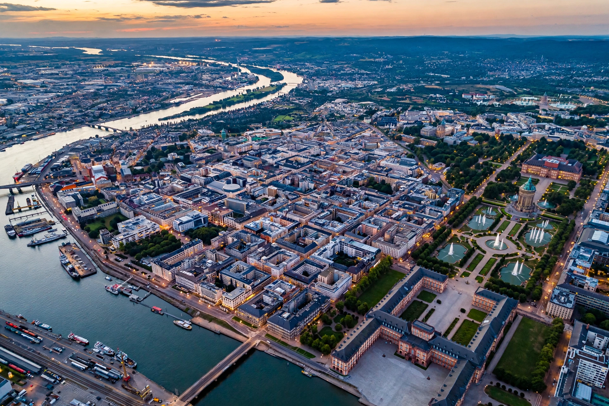

Mannheim is a city in Baden-Württemberg, southwestern Germany, at the confluence of the Rhine and Neckar rivers. With about 310,000 inhabitants it forms part of the Rhine-Neckar metropolitan region with Heidelberg and Ludwigshafen.

| Country | Germany |
|---|---|
| State | Baden-Württemberg |
| Population | ~310,000 |
Founded as a fortress town in 1606, Mannheim was laid out on a distinctive grid of streets known as the Quadrate. Its Baroque Palace, one of Europe's largest, was the residence of the Electors Palatine. Karl Drais invented the draisine (precursor of the bicycle) here in 1817, and Karl Benz built his first automobile in Mannheim in 1885.
The Mannheim school of 18th-century composers influenced classical music. Today the city is known for the University of Mannheim, the National Theatre, and its inventive grid city centre.